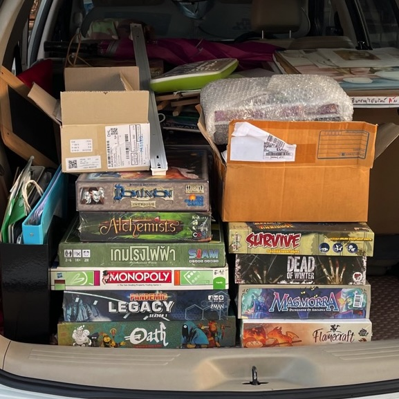

มองเห็นเมื่อเราเดินจากไป

ตอนเราสุขภาพดี ไม่มีใครถามเราหรอกพี่ แต่พอหายป่วย กลับมายินดีกันใหญ่
ช่วงนี้ต้องขนของบ่อยๆ จากบ้านไปบ้านใหม่ จากที่เช่าไปบ้านใหม่ วนไปวนมา
คนที่เคยเห็นเราในพื้นที่เช่าทุกวัน ผ่านไปผ่านมา ได้แต่มองเฉยๆแล้วก็ใช้ชีวิตตัวเอง แต่พอเรากำลังย้ายของออก กลับมาถามว่า ”จะไปแล้วหรอ จะไปไหน น่าเสียดายนะ”
เออแปลกดี ทั้งๆที่เราก็อยู่ตรงนั้นตั้งนาน ไม่เคยคิดจะเข้ามาถาม แต่พอเราจะไปกลับเข้ามาถาม แล้วก็มารำเพ้อรำพันว่าน่าเสียดายจัง เหมือนกำลังจะมีอะไรดีๆ จัดร้านซะสวยเลยนะ น่าเสียดายจัง
ทำให้ผมนึกถึงบทสนทนาที่ผมเคยคุยกับรุ่นพี่ในตอนที่เรากำลังปรึกษากันเรื่องการช่วยเหลือวงการบอร์ดเกมไทยว่า ทำไมคนไทยถึงไม่นิยมบอร์ดเกมไทย และไม่มีใคร แม้แต่กับคนที่อยู่ในวงการ ก็ไม่ช่วยกันดันแสงสปอตไลท์ไปที่กลุ่มคนที่รักและอยากผลักดันให้บอร์ดเกมไทยที่ คนไทยทำกันเอง ไปได้ไกลกว่านี้
คนเรา เวลาที่เรากำลังลำบาก ทำงานหนัก คงไม่มีใครอยากมารู้เรื่องหรอก มันดูไม่น่าสนใจ ดูเหนื่อยที่จะฟัง แต่พอเราประสบความสำเร็จปุ๊บ ว้าว เธอ ทำยังไง เธอนี่โชคดีนะ ไปเรียนจากใคร ขอดูสูตรสำเร็จหน่อยได้ไหม
มีประโยคหนึ่งที่ผมบอกกับเขาไปว่า ”ตอนเราสุขภาพดี ไม่มีใครถามเราหรอกพี่ แต่พอหายป่วย กลับมายินดีกันใหญ่”
คนเรามันคงมีบางอย่างในใจ เวลาปกติก็คือนึกว่าจะมาเมื่อไหร่ ทำอะไรตอนไหนก็ได้ ไม่คิดถึงตอนที่เขาจะหายไปจากชีวิต
เมื่อตอนนั้นกลับมาเสียดาย
ตอนนี้ สิ่งสำคัญก็คือการได้ทำอะไรที่ตัวเองมีความสุข การเขียนเรื่องราวพวกนี้ก็เป็นหนึ่งในนั้นในตอนนี้ ทุกอย่างมีการเปลี่ยนแปลงเสมอ แต่การอยู่กับปัจจุบัน สำหรับผม คือการมีชีวิตอยู่ที่ดีที่สุด มีความสุขที่สุดแล้ว
อดีตเกิดขึ้น มีไว้ให้เรียนรู้ เพื่อวางแผนเตรียมพร้อมให้กับอนาคตที่ยังมาไม่ถึง
แต่สิ่งสำคัญที่ทุกคนมักจะมองข้าม ก็คือปัจจุบัน ที่เรารู้สึกตัว ยังหายใจ ยังมีอะไรดีๆกิน มีบ้านอยู่ มีเพื่อนฝูง มีครอบครัว มิตรภาพจากระยะทางไกล หนังสือดีๆที่ได้อ่าน หนังดีๆที่ได้ดู ได้ทำอะไรที่ตัวเองอยากทำ
พวกนี้แหละ คือสิ่งที่ทำให้ชีวิตที่เกิดมา ไม่เสียดายเลย